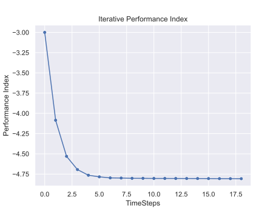
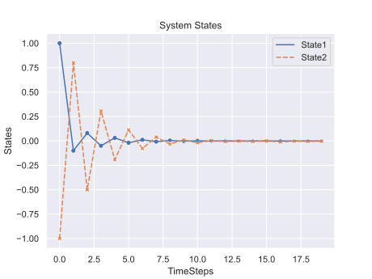
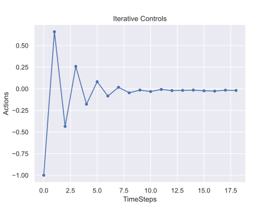

论文《Policy Iteration Adaptive Dynamic Programming Algorithm for Discrete-Time Nonlinear Systems》
这几天读了ADP相关的几篇论文，早期08年-14年都是用Policy Iteration方法进行求解，14-18年，Policy Gradient方法多了起来。
仿真实例
1.线性系统
对于给定的线性系统：\[x_{k+1}=A x_{k}+B u_{k}\]
其中，\(x_{k}=\left[x_{1 k}, x_{2 k}\right]^{T}\)， \(u_{k} \in \mathbb{R}^{1}\)
\(A=\left[\begin{array}{cc} 0 & 0.1 \\ 0.3 & -1 \end{array}\right]\)， \(B=\left[\begin{array}{c} 0 \\ 0.5 \end{array}\right]\)
初始状态\(x_{0}=[1,-1]^{T}\)
设计PPO控制器：
1 | import gym |
控制效果：



性能指标在控制到3个timestep后基本收敛，但是控制器输入和状态有一定的波动，查看数据可以发现，不能完全收敛到0.0，而是一直在-0.001-0.001内波动。
训练过程中的经验
- 要让它能学到最优值，训练过程中时刻关注
ep_rew_mean之类的参数，看它是不是在一直变小，如果不是，那么环境可能有问题。 - 训练效果和
total_timesteps有很大的关系，在训练效果不好的情况下且ep_rew_mean不断变小的情况下可以考虑增加total_timesteps的大小。 - 对于控制问题来说，设置终止条件很重要，比如一个Episode训练多少步才将
done设置为True，像在这个问题中，对于简单的，无时滞的系统来说，比如我想要在10个timesteps内达到控制要求，那么在环境中设置termination为10。 - 改变PPO的参数会对控制系统的效果有一定的影响，具体的影响需要进一步测试。
- 如何增加控制器输入变化的限制？控制器输入的限制可以直接通过训练的时候设置
action_space的大小来限制，但是控制器输入变化\(\Delta u\)如何来进行限制？ - 对于线性系统来说，初始状态的选取，对于控制器的控制效果没有影响，例如我用初始状态为\(x_{0}=[1,-1]^{T}\)的环境进行训练后得到的模型，当使用训练好后的模型进行控制的时候，即使你改变初始状态，不影响控制效果。